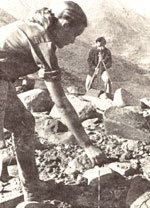

Those of you who dream of venturing forth on a scientific expedition-perhaps tracking rhinos in the wilds of Africa, or helping to study and interpret the antics of whales, or finding and actually holding in your hand an ancient artifact that has lain untouched for thousands of years-may well want to investigate Earthwatch (Dept. TMEN, Box 127, Belmont, Massachusetts 02178).
In 1982, this nonprofit organization sponsored more than 80 expeditions to 20 states and 30 countries . . . involving such varied areas of study as archaeology, anthropology, ornithology, marine biology, ecology, and animal behavior. They succeeded in this endeavor by matching up interested lay people with scholars from some 50 universities who needed help in accomplishing their field research.
You don't have to be a scientist to take part, because everyday talents can almost always be put to unexpectedly good use. On one trip, for example, a grandmother's tea-cup-mending ability was found to be perfectly suited for artifact reconstruction . . . in another case a rock group's soundman recorded the calls of dolphins . . . and during a journey to Kenya a physician was called upon to give mouth-to-mouth resuscitation to a hyena. More important than academic training, says Earthwatch, are curiosity, a flair for adventure, and an abiding sense of humor!
The organization divides long expeditions into two- and three-week segments, because most people can help out only during their vacation periods. Costs to volunteers range from $500 to $1,500, plus airfare and travel expenses to the staging area . . , but you'll find that most of the amount you pay is taxdeductible. Keep in mind, though, that the teams are small and sometimes oversubscribed . . . so you might not be chosen for the expedition of your first choice.
Write to Earthwatch for more specific information.
Queensland, which comprises about one-fourth of the entire continent of Australia, has long been a favorite winter vacation area for down-under residents, as well as for foreign visitors . . . hence it's often referred to as "the Sunshine State" or "the Holiday State". Among the many attractions of this northeast region are the coastal and island resorts along the Great Barrier Reef: a unique, 1,200-mile underwater garden approximately the size of the British Isles. Unfortunately, the district's popularity has resulted in high prices . . . but as MOTHER-reader and Queensland native Connie Dalglish writes, "There is just so much to see here, such pleasant weather, and so many opportunities for people with a bit of go in them that it seems senseless to stay at home just because you have no money."
To help such people out, Connie has put together an unpretentious-and very practical-little book called The Poor Person's Travel Guide to Queensland. Originally intended as an alternative travel manual, the publication has been broadened in scope to help the area's full-time residents, too. Not only is the booklet full of wise tips and access information, but it's also imbued with a refreshing philosophy of "simple living" reminiscent of Thoreau.
"The key to wealth," Connie points out, "is access to goods, not ownership. You don't need to have money to make a meaningful contribution. Your time, energy, and personality can be of much more use than your dollars. Realize that you're your own best asset-that your skills and initiative are your wealth-and much is possible."
The booklet can be ordered directly from Connie Dalglish (Dept. TMEN, P.O. Miriam Vale, Queensland 4677, Australia). She will send it anywhere in the world-by airmail-for $5.00 (Australian) or to any address in Australia or New Zealand for $3.00 (Australian). At the time of this writing, the Australian dollar is worth 93Q in the U.S. When you order the book, you can call your local bank for the current exchange rate . . . or you might just send the full cover price in American dollars, plus a little extra "just in case".
Even if you never plan to visit Queensland, it might be worth looking over Connie's creation with the thought of putting together a "poor person's guide" to your own state or region!
Remember, you receive a free one-year subscription to MOTHER if your travel tip is published in this column. Write to Getting There, THE Mother Earth News (restricted) , 105 Stoney Mountain Road, Hendersonville, North Carolina 28791.
|
 |
|
|